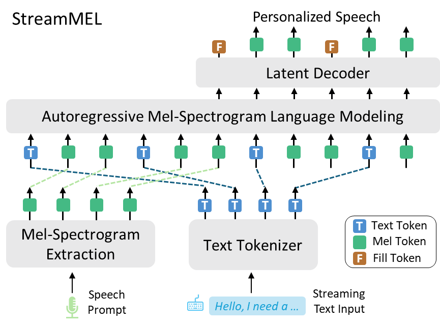

StreamMel
Real‑Time Zero-shot Text‑to‑Speech via
Interleaved Continuous Autoregressive Modeling
Abstract. Recent advances in zero-shot text-to-speech (TTS) synthesis have achieved remarkable success in generating high-quality speech for unseen speakers but are designed for offline generation and are not suitable for real-time applications. Existing streaming TTS paradigms are frequently hindered by the constraints of multi-stage processing pipelines and the dependence on discrete representations, which significantly impedes the ability to achieve an optimal trade-off between system performance and computational efficiency. In this work, we propose StreamMel, a single-stage streaming TTS framework that directly models continuous mel-spectrograms in an interleaved fashion. By interleaving text tokens with previously generated acoustic frames, StreamMel enables low-latency, autoregressive synthesis while preserving high speaker similarity and naturalness. Experiments on LibriSpeech demonstrate that StreamMel outperforms existing streaming TTS baselines in both quality and latency, achieving performance comparable to offline systems while supporting efficient real-time generation.
Contents
Model Overview

Figure. Overview of StreamMel, an autoregressive, single-pass model that generates continuous speech representations from streaming, interleaved text and speech inputs.
Zero-Shot Text-to-Speech for Cross-Sentence Task
Samples are from LibriSpeech dataset.
| English Text | Prompt Audio | StreamMel | IST-LM | SMLLE |
|---|---|---|---|---|
| after early nightfall the yellow lamps would light up here and there the squalid quarter of the brothels | ||||
| it is the head of a parrot with a little flower in his beak from a picture of carpaccio is one of his series of the life of saint george | ||||
| also a popular contrivance whereby love making may be suspended but not stopped during the picnic season | ||||
| i will endeavor in my statement to avoid such terms as would serve to limit the events to any particular place or give a clue as to the people concerned | ||||
| the paris plant like that at the crystal palace was a temporary exhibit | ||||
| then dear said missus whitney you must be kinder to her than ever think what it would be for one of you to be away from home even among friends | ||||
| he had preconceived ideas about everything and his idea about americans was that they should be engineers or mechanics | ||||
| she has a son theft and a daughter hunger | ||||
| it is such a noble ambition that it is a pity it has usually such a shallow foundation | ||||
| out in the woods stood a nice little fir tree | ||||
| hers happened to be in the same frame too but she evidently did not care about that | ||||
| this thought however did not enter the heads of the enthusiastic pair | ||||
| in the light of the moon i saw a knife red with blood and my hand too was also discolored | ||||
| gentlemen to your posts whereupon saint aignan and villeroy took their leave | ||||
| that summer is emigration however being mainly from the free states greatly changed the relative strength of the 2 parties |
Zero-Shot Text-to-Speech for Continuation Task
Samples are from LibriSpeech dataset.
Note: The first 3 seconds of each speaker prompt audio are used as the reference prompt for synthesis.
| English Text | Ground Truth | StreamMel | IST-LM |
|---|---|---|---|
| the dews were suffered to exhale and the sun had dispersed the mists and was shedding a strong and clear light in the forest when the travelers resumed their journey | |||
| i will endeavor in my statement to avoid such terms as would serve to limit the events to any particular place or give a clue as to the people concerned | |||
| in the debate between the senior societies her defense of the 15th amendment had been not only a notable bit of reasoning but delivered with real enthusiasm | |||
| but the windows are patched with wooden panes and the door i think is like the gate it is never opened | |||
| then dear said missus whitney you must be kinder to her than ever think what it would be for one of you to be away from home even among friends | |||
| we want you to help us publish some leading work of luther is for the general american market will you do it | |||
| he had preconceived ideas about everything and his idea about americans was that they should be engineers or mechanics |
StreamMel with Different Parameter Configurations
Samples are from LibriSpeech dataset. We compare StreamMel's performance under different n:m (Number of text tokens to acoustic frames) settings.
| English Text | Prompt Audio | None streaming | n:m=2:1 | n:m=1:2 | n:m=1:4 |
|---|---|---|---|---|---|
| after early nightfall the yellow lamps would light up here and there the squalid quarter of the brothels | |||||
| it is the head of a parrot with a little flower in his beak from a picture of carpaccio is one of his series of the life of saint george | |||||
| also a popular contrivance whereby love making may be suspended but not stopped during the picnic season | |||||
| i will endeavor in my statement to avoid such terms as would serve to limit the events to any particular place or give a clue as to the people concerned | |||||
| the paris plant like that at the crystal palace was a temporary exhibit | |||||
| her sea going qualities were excellent and would have amply sufficed for a circumnavigation of the globe | |||||
| i remained there alone for many hours but i must acknowledge that before i left the chambers i had gradually brought myself to look at the matter in another light |
Ethics Statement
StreamMel is a research prototype designed to explore low-latency, streaming speech synthesis. It can generate high-quality, speaker-consistent audio suitable for applications such as education, entertainment, accessibility tools, interactive voice response, real-time translation, chatbot agents, and self-authored content. Although StreamMel can emulate a target voice, the ultimate similarity and naturalness depend on factors like prompt length, recording quality, and background noise. Misuse risks include unauthorized voice cloning or speaker impersonation. All reported experiments assume that the user has consented to serve as the target speaker; broader deployment would require explicit speaker approval and integration of a synthesized-speech detection mechanism.
This page is for research demonstration purposes only.